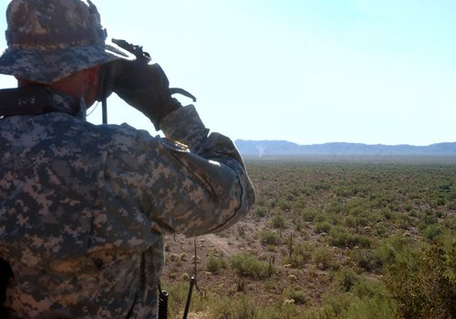

SARAH PALIN ON THE IMMIGRATION ISSUE
(From Greta Van Susteren Interview May 10, 2010 and O'Reilly interview July 9, 2010)
[REPRESENTS] - [LABOR DAY] - [BEST FRIEND] - [HOFFA RERSPONSE] - [PALIN HIDING?] - [FAREWELL AS GOV]
What follows are transcripts of the relevant parts that Palin did on immigration with Great Van Susteren on May 10, 2010, and Bill O'Reilly on July 9th.
She says a lot of specific stuff here and it is clear to me that she intends
- To finish the fence, the physical barrier, a double fence from Brownsville to San Diego.
- That she will put the National Guard on the border in whatever numbers it takes to secure it, clearly with a mission and Rules of Engagement that will allow them to do so.
- That she supports state efforts to help with this effort, meaning if Governors want to use their Sheriff's and Citizen's I believe she will support them.
- That she intends to attack the illegal aliens who are already here by requiring them to reigester their name, address, what they are doing, etc. with the Federal Government.
- Any that do not register in 90 days or so will be tracked down and deported.
- Those that do register will not be rewarded for their breaking the law she says...but is not clear on exactly what she would do with them. At points she sounds like she wants to filter through that bunch and find some way of letting those that want to work be involved with some kind of temporary work program (which I am leary of and needs a lot more detail).
If the last part is true, she needs to be much more specific about how it can work without "rewarding those who came here illegally," which she is adament about in the interviews.
I honestly believe she is trying to set up an environment where the vast majority will self deport, because I doubt seriously that very many will "register themselves with the federal government", particularly as she goes about seriously tracks down and deports those who do'nt.
Here's the transcripts:

From Great Van Susteren ON the Record, May 10, 2010
PALIN: I'm proud of Jan Brewer for standing up for the constituents in her state, sending a message to Washington, sending a message to President Obama saying, Hey, you need to do your job, sir. And if you're not going to do it, OK, then we are compelled to do the job for you until you get it right.
President Obama has been suspiciously silent on this issue, hasn't he? We don't even know where he stands on immigration reform or securing our borders. He doesn't talk about it. He gets to punt on that one. And that's unfortunate because this is a big issue. It's all about national security. It's about our sister border states that are inundated with violence and with crime because people illegally crossing the border, engaging in illegal activities for too long now. And some of these border states are saying, Now we've had enough. I admire Jan Brewer for taking a stand.
VAN SUSTEREN: Why do you think -- I mean, for 20-some years, maybe even longer, even going back to President Reagan -- everyone has always said, We're going to secure the borders.
PALIN: Yes.
VAN SUSTEREN: Nobody has done anything. I mean, or almost nothing.
PALIN: Because they've made it political and they haven't understood that unsecure borders isn't fair to anybody. It's not fair to American citizens who ware here legally, paying taxes, following the rules, doing all the things that an American citizen is expected to do. It's not fair to them. But it's not fair to the illegal aliens, either, here. They want to come pursue an American dream. Some of them do want to be here to work. But they're forever going to have to hide because, you know, government's going to crack down on them when (INAUDIBLE)
So they need to follow that path of legal citizenship, obviously. But these politicians, presidents in the past who have not secured the border, they've made it a political issue. They haven't wanted to tick off a potential base of Hispanic voters, so they haven't made the tough decisions. And that's no way to solve the problem. That's no way to solve any challenge in America, by ducking and hiding and creating division and making these partisan issues out of it.
VAN SUSTEREN: Both parties have made promises. I mean, we pull up sound bites where, you know, both sides, you know, Democrat, Republicans, say, you know, Secure the border, secure the border. And then once in office, we certainly don't see a whole lot of action. Had the election gone another way, or even if you were president, what would you do about immigration?
PALIN: The very first thing is literally secure the border!
VAN SUSTEREN: How?
PALIN: People mock the idea of a fence. What's wrong with building a fence? Yes, let's physically secure the border. Let's ramp up border control. Let's provide the tools for those who are putting their lives on the line in order to stop illegal immigration of these aliens. Those are a couple of things.
And then you don't start talking about amnesty, either, kind of as this last-minute, Oh, anybody who's here in the country right now, we're going to provide you amnesty, and even though you've broken the law and we are a nation of laws, you've broken that, we'll still give you -- because then there's going to be a huge influx of those wanting kind of at the last minute to come over the border because they know that they will forever then receive that amnesty.
So you don't start talking about that, but the very first thing you do is physically, literally secure those borders. It baffles me and most Americans why for all these years presidents, administrations have spoken about it but never done it.

From the O"Reilly Factor INterview July 9, 2010
O'REILLY: So you're president of the United States, Sarah Palin. You send how many National Guard to the border right away to secure it?
SARAH PALIN, FORMER GOVERNOR OF ALASKA: However many you need. This is a top priority. This is a national security issue.
O'REILLY: All right, but I'm talking Texas, California, New Mexico, all of them. So you'd send maybe 10,000, 15,000 National Guard down there to assist the Border Patrol, yes?
PALIN: Whatever it takes. Whatever it takes.
O'REILLY: All right, so you'd militarize the border. You'd finish the fence, finish building the fence from Brownsville to San Diego, yes?
PALIN: Yes.
O'REILLY: Ok, the people watching this program have it. We have it. We assume that you, as president, would secure the border. I have confidence that you would do that. But now you have to look inward, all right? And you've got 12 million people staring at you. What are you going to have them do?
PALIN: You're not going to give them a free pass. You're not going to say, OK, you and anybody else who wants to scurry across this porous border between now and when we finally do finally get it fenced in and physically secure, we're going to give you a free pass.
O'REILLY: All right.
PALIN: And just because you've broken law in the past…
O'REILLY: So no amnesty.
PALIN: …we can trust you. No, no amnesty.
O'REILLY: But what do you do with these folks?
PALIN: Which means…
O'REILLY: Do you make them register with the federal government? Do you tell them they have 60 days to get out of here before we put you in jail? What do you do with them?
PALIN: Do we make them register with the federal government? Yes, we do. We're not going to give them a free pass.
O'REILLY: So you make them register with the federal government.
PALIN: We're not going to reward the bad behavior.
O'REILLY: And if they don't register with the -- say you gave them 60 days to register with the federal government. There's a form at the post office they have to send in like a Census form. All right, say they didn't do it.
PALIN: You deport them.
O'REILLY: OK.
PALIN: You have to get them out.
PALIN: As to jobs, American citizens who are here lawfully, they need to be the ones with the first shot at getting these jobs. We cannot make it easy on those who have chosen to be illegally here to disobey our laws. No.
O'REILLY: No, we can't make it easy, but they're here. And we can't starve them to death. And if they can't work, if they don't have a green card to work, they're going to be hosed. I mean, they got to pay rent, they got to buy groceries…whoever the next president is, is going to have to deal with 12 million people. And that's going to be very, very difficult.
All right, let me switch gears here. This is frightening me, governor. I'm getting very, very afraid of mama grizzlies. And you are, I guess, the mama grizzly chieftain. Am I -- why don't you explain what the mama grizzly deal is?
PALIN: Mama grizzly in a political sense is someone who is watching what is going on that is adversely affecting our cubs, our children, the future of America. And there are a lot of common sense, constitutional conservative women who are willing to put it all on the line and run for office or support candidates willing to run for office to take this country back…
O'REILLY: All right, so this is a clarion call.
PALIN: …and not allow the Pelosi, Reid, Obama administration and agenda continue to put us on a path towards insolvency…
O'REILLY: OK.
PALIN: …to put us on a path toward a less secure and less free nation.
O'REILLY: So you are trying to mobilize mama grizzlies all over from Anchorage to Key West from San Diego to Bangor, Maine, to get involved, either run themselves or support candidates they like. This mama grizzly movement is going to take over the country.
PALIN: It's all about stopping Obama, Pelosi and Reid and what they are doing to our country, to our children and our grandchildren and their futures.
There's a lot of specific, hard hitting stuff in there...much more specific than most of the other potential major candidates for President and I like what she says, with the exception that this guest worker program needs to be detailed out...it needs to be temporary requiring the workers to send home their families immediaely, denyig them any anchor baby status, denying them US social welfare, etc, and to be temporary itself requiring the worker to go home within a couple of years.
Such a program would cause most of the remainder to self deport as well. We can deal with whatever is left over after that IMHO if she will do all the other things she speaks of.
All in all, I would call her stance on immigration from these interviews and the specific things she promises as very strong...and I am glad to see it and would like to see i implemented by her as President after being elected in 2012.
If we work hard, if we appeal to God in Heaven for His guidance and help, if we rally the conservatives around the effort and her, with our efforts as a offering and witness to God in Heaven and to the truth and enduring nature of the fundamental principles upon which our Republic rests, we may be blessed to see a repeat of 2010 in 2012 and a tremendous turn around in our nation.
I pray God in Heaven it will be so, for our nation, for our liberty, for our way of life...and for my grand children, and intend to work my heart out to make it so.
In the mean time, here's some food for her thinking regarding plans to secure the border:

A Comprehensive Plan for US Southern Border Enforcement
|